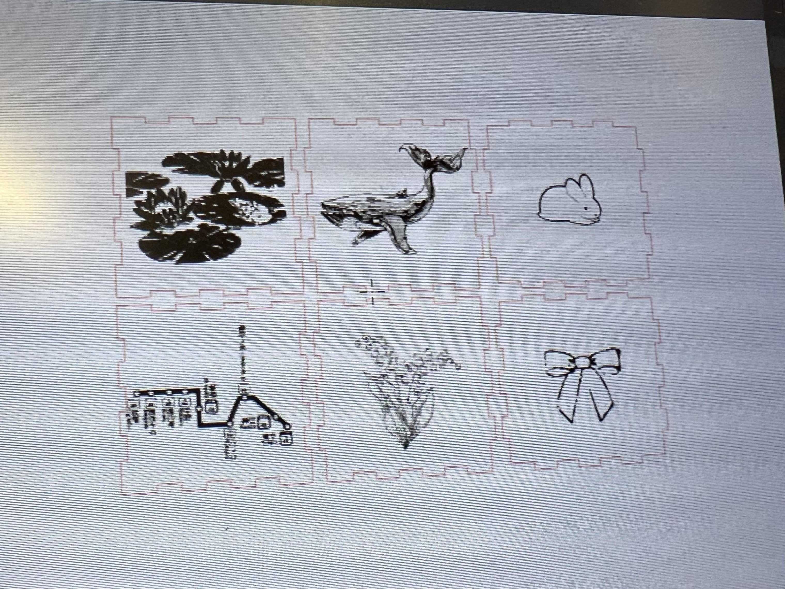
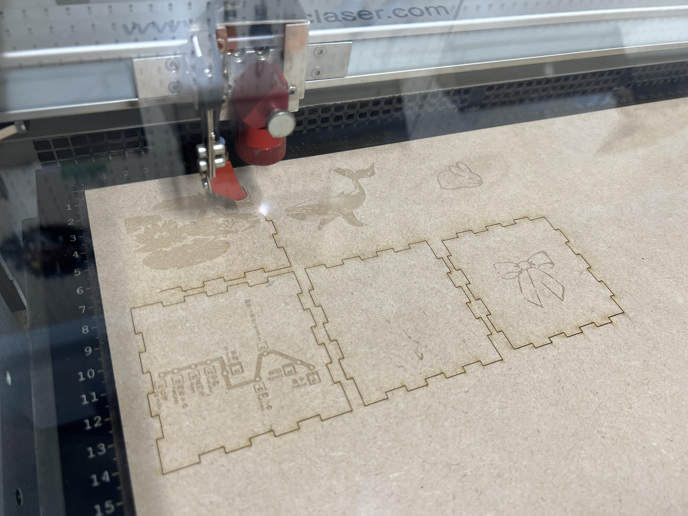
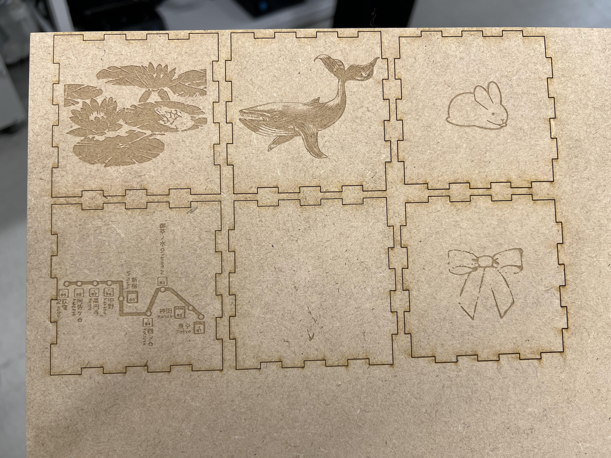
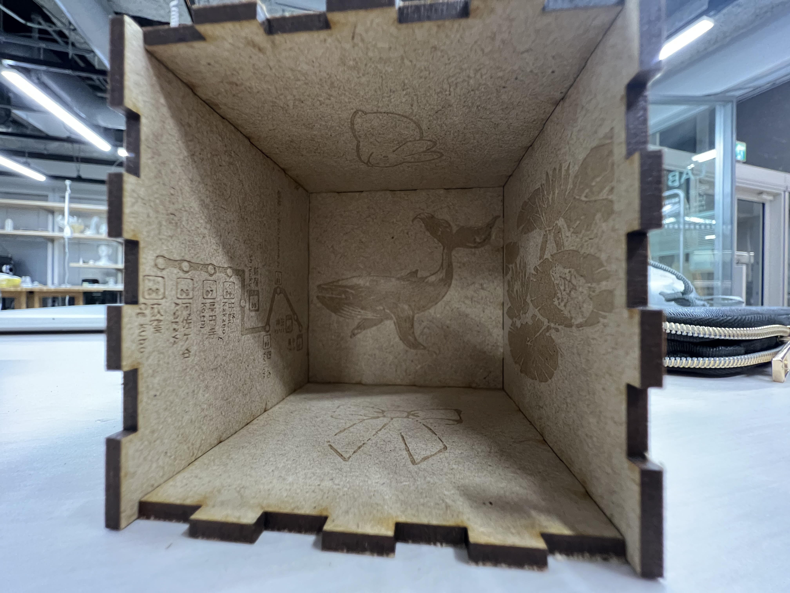
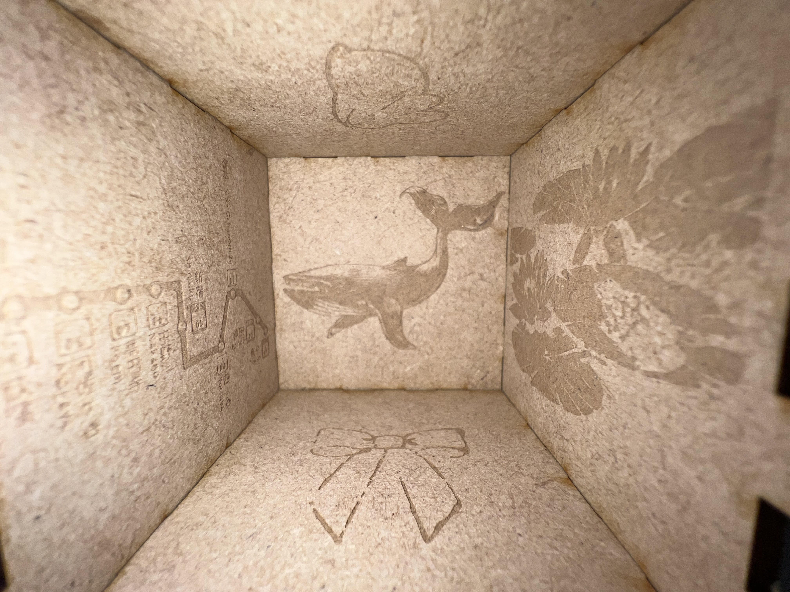
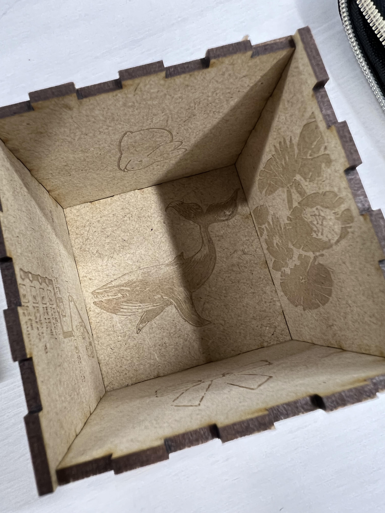
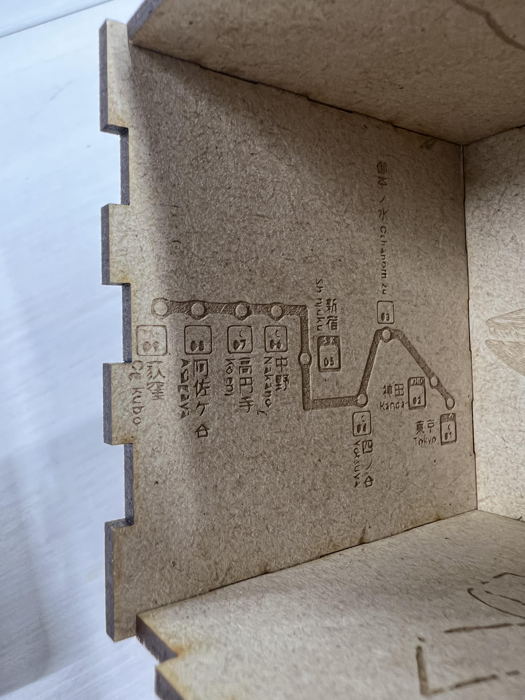
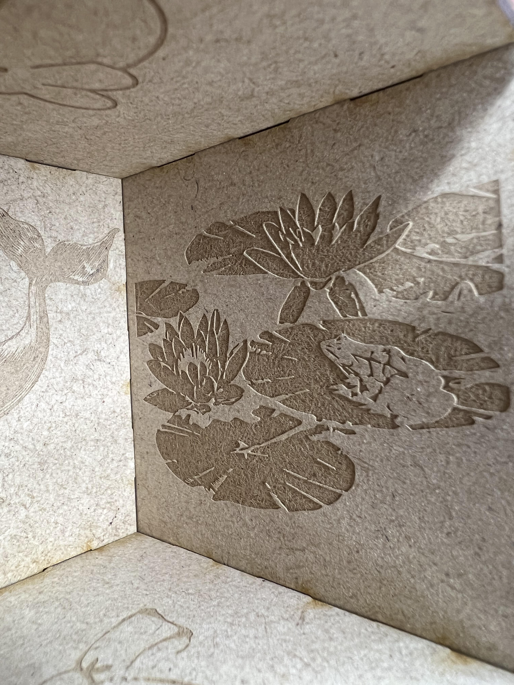
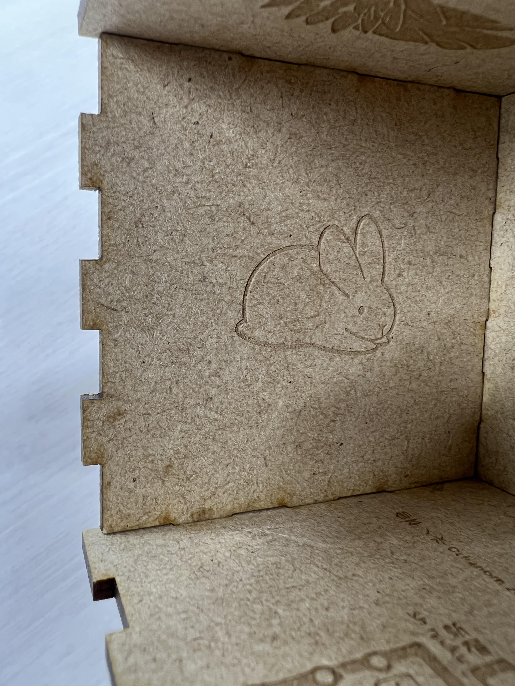
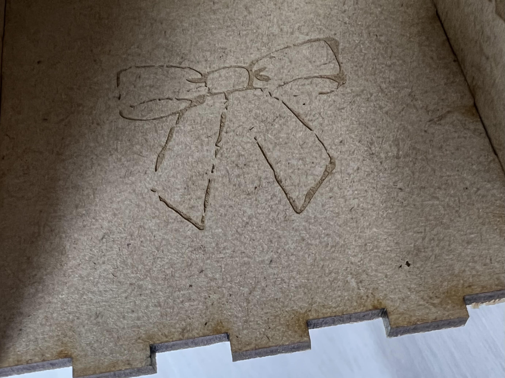

Computer-controlled Cutting
今回の課題では内側に自分の好きなものをイラストをプリントした箱を考えました。



睡蓮、クジラ、ウサギ、中央線の路線図、鈴蘭、リボンのイラストをプリントしましたが、
鈴蘭のみ、色が薄かったせいかうまくプリントされませんでした。

完成品です。
プリントがうまくいけば、全てイラストが内側の外からは何も見れない箱に、
プリントがうまくいかなかった面があれば、その面だけ外して中を見えるようにというように完成させるつもりだったので、
鈴蘭の面だけ外して、内側のイラストをのぞける箱にしました。





